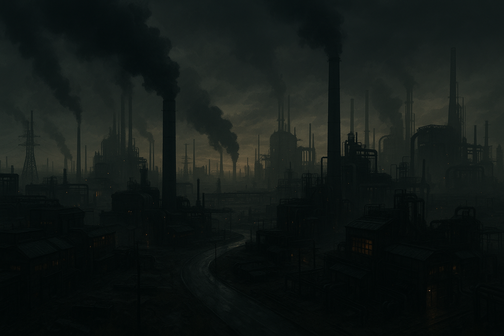

AI-avusteiset työkalut kehitteillä
Villen koodailut
Testaillaan tekoälyllä tehtyä koodausta — pikatyökaluja arkeen ja teknisiä kokeiluja tuotantoon. Ensimmäisinä: virtauslaskuri, pumppuenergian arvio ja kevyt selainpeli.
3
Työkalua
v0.2
Esiversio
AI
Generoitu UI

Muut koodailut
Miksi näin tumma?
Tumma teema toimii hyvin esityksissä, tuo painikkeet esiin ja säästää silmiä. Taustan väripilkut (sky/amber) tuovat eloa ilman, että teksti menettää erottuvuuttaan.